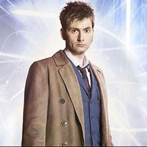

| Home | The Doctors | The Companions | The Villians |
|
|||
The Doctors
|
The Twelfth DoctorCapaldi was cast in 2013 as the Doctor in the BBC science-fiction series Doctor Who. His casting was announced on 4 August 2013 in a special BBC programme hosted by Zoë Ball. Capaldi first appeared as the Doctor in a cameo in the 50th anniversary special, "The Day of the Doctor", before appearing in the 2013 Christmas special, "The Time of the Doctor". A lifelong fan of the series, Capaldi had previously played Lobus Caecilius in the 2008 episode "The Fires of Pompeii" as well as playing civil servant John Frobisher in the 2009 spin-off Torchwood: Children of Earth. Before taking the role, Capaldi stated that he had to seriously consider the increased level of visibility that would come with the part.] He revealed in an interview with Entertainment Weekly that he had been invited to audition for the role of the Eighth Doctor in 1995 prior to the production of the 1996 TV film but didn't go, stating: "I didn't go. I loved the show so much, and I didn't think I would get it, and I didn't want to just be part of a big cull of actors."[21] In 2014, Capaldi voiced the Doctor on the CBBC website's game, The Doctor and the Dalek.
|